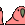
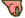

library("dplyr")HAPPY world emoji day! 🌎 🐔 📆
In honor of this momentous occasion, I have decided to analyze the emojis used on rOpenSci’s Slack.
If you’d like to follow along, go fetch yourself a Slack token.
token <- "MY_SLACK_API_TOKEN" ## stick your token hereWe will first use Slack’s reactions.list method.
Notice here I am pulling the items from the response and then from each item I am interested in the message reactions. This ignores the reactions on files and comments.
req_lst <- httr::POST(
"https://slack.com/api/reactions.list",
body = list(
token = token,
count = 500
)) %>%
httr::content() %>%
.$items %>%
purrr::map(~.[["message"]][["reactions"]])Let’s pull out the name and count of each emoji used and stick it in a tibble 🎉.
tbl <- tibble::tibble(
name = purrr::map_chr(purrr::flatten(req_lst), "name"),
count = purrr::map_int(purrr::flatten(req_lst), "count")
)One of the most delightful features in Slack is the ability to create custom emojis! In order to be able to display both ordinary and custom emojis, I can pull in a list of all emojis we have customized in the rOpenSci Slack team using the emoji.list method.
Notice here I am using the tibble::enframe() function. This is an awesome way to convert a vector or list to a two-column data frame.
emojis_tbl <- httr::POST(
"https://slack.com/api/emoji.list",
body = list(token = token)
) %>%
httr::content() %>%
.$emoji %>%
tibble::enframe() %>%
mutate(value = unlist(value))The emojis_tbl data frame contains the name of each custom emoji and a link to their associated image. Here I create a small function that will either read that image using the magick package or, if it is an ordinary emoji, use the emo package to look it up.
read_emoji <- function(x, y) {
if (!is.na(x)) {
magick::image_read(x)
} else {
emo::ji(y)
}
}Let’s do a wee bit of data wrangling 🚜 to sort out which emojis are used the most.
top_emojis <- tbl %>%
group_by(name) %>%
summarise(count = sum(count)) %>%
arrange(desc(count)) %>%
slice(1:10) %>%
left_join(emojis_tbl, by = "name") %>%
mutate(emoji = purrr::map2(value, name, read_emoji))I have written another small function to make sure the custom emojis print properly when I render my output.
Note, if you are doing this for your blog, rather than saving a temporary file as I have demonstrated here, you should save this as a relative file path in your blog 🌳.
render_emoji <- function(x, y) {
if (inherits(x, "magick-image")) {
tmp <- tempfile(fileext = ".gif")
x <- magick::image_scale(x, "25x25")
magick::image_write(x, path = tmp)
emoji <- rep(glue::glue(""), as.integer(y/7))
print(glue::glue("{glue::glue_collapse(emoji)}: {y}\n\n"))
} else {
emoji <- rep(x, as.integer(y/7))
print(glue::glue("{glue::glue_collapse(emoji)}: {y}\n\n"))
}
}Now let’s walk it out 💃.
purrr::walk2(top_emojis$emoji, top_emojis$count, render_emoji)[1] “👋👋👋👋👋👋👋👋👋👋👋👋👋👋👋👋👋👋: 130”
[2] “👍👍👍👍👍👍👍👍👍👍👍👍👍👍👍👍👍👍: 129”
[3] “❤️❤️❤️❤️❤️❤️❤️❤️❤️❤️❤️: 83”
[4] “: 75” [5] “🎉🎉🎉🎉🎉🎉🎉🎉🎉: 65”
[6] “🐓🐓🐓🐓🐓: 36”
[7] “😂😂😂😂: 34”
[8] “➕➕➕➕: 29”
[9] “🍻🍻🍻🍻: 28”
[10] “: 27”
How delightful! It is no surprise that the 👋 is the most popular emoji used, since rOpenSci is an extraordinarily welcoming crew! In fact the community organizer, Stefanie, just wrote a blog post about our Slack #welcome channel. I am (obviously) very proud to see that 🐓 makes a strong appearance (#rchickenladies), and of course delighted to see our Aussie friends getting represented by the Aussie party parrot.